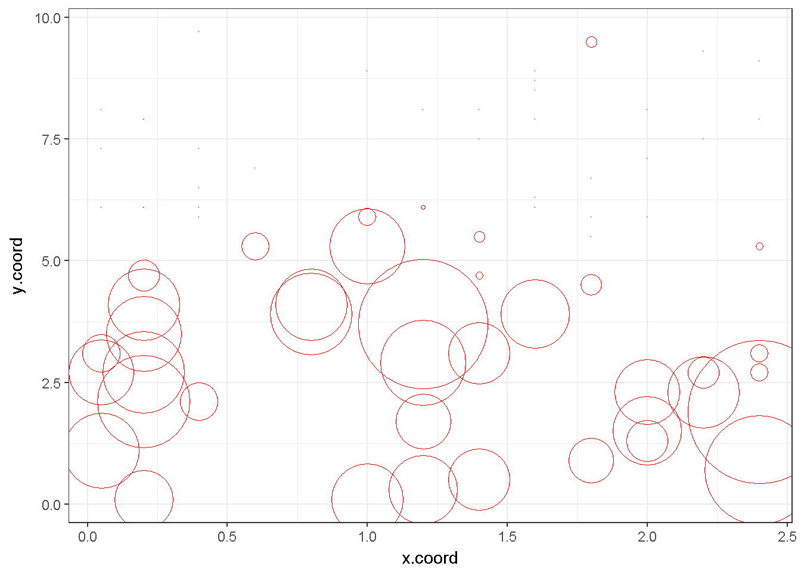

So I finally got round to creating a new website. It has taken a fair while, as there is always something more pressing to do. The world of websites has moved on somewhat since my last homestyle HTML affair. I experimented with Wordpress for a while, but was not keen on the limitations imposed. In the meantime a range of nice static website generators appeared.
As the site is hosted on Github pages, I tried out Jekyll, but at the same time I came across the blogdown package for R, which is based on the Hugo static site generator. This had the double advantage of allowing me to write in Markdown or Rmarkdown, simplifying content generation, and also being able to manage content within RStudio, where I do all my data analysis and graphics anyway. So not only is writing content easy, I can also easily add in R code and plots.
To demonstrate, let’s do a quick bit of plotting…
# load up the classic 'mite' data from the vegan package and ggplot2
library(vegan)
library(ggplot2)
data(mite)
data(mite.xy)
# bind the x and y coordinates with the TVEL abundance data
df<-cbind.data.frame(mite$TVEL, mite.xy$x, mite.xy$y)
# rename the columns
colnames(df)<-c("TVEL", "x.coord", "y.coord")
# produce a simple bubble plot of the abundances across space
ggplot(df, aes(x=x.coord, y=y.coord)) +
geom_point(shape=1,color="red", size=df$TVEL) +
theme_bw() Nice!
Documentation for the package is a bit sparse, but I found some really useful advice at https://proquestionasker.github.io/blog/Making_Site/.
There are a huge range of site themes available for Hugo, which you can install using blogdown. I went with the Academic Theme and subsequently learnt how little I know about CSS, let alone YAML/TOML! Still, I got more or less sorted in the end. Have a look around - it’s still a bit of a work in progress, but the majority of things work now.